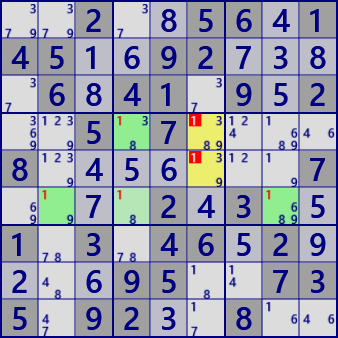

●X-Chain
X-Chainは、1数字の強いリンクと弱いリンクの連結で生じるLockedを用いた解析アルゴリズムです。
着目数字Xを設定し、着目セルからの強いリンクで開始して、強・弱のリンクを交互に連結して連を作ります。
弱いリンクの先のセルが着目セルと同じhouseに属するとき、このセルの候補数字からXを除外できます。
強いリンクは弱いリンクでもあるので、連は強・強・強となることもあります。

X-Chainの例です。
X-Chain #1
Stem : r4c4
Eliminated : r45c6

X-Chain #7
Stem : r7c6
Eliminated : r1c6 r8c4
(in GNPX) paste the next 81 digits onto the grid and solve with /Solve/MultiSolve/
..2..56.145..92....6.41.9.2..5.7....8.......7....2.3..1.3.46.2....95..735.92..8..
...4..296.79..2..3.42..351.4.......2.....1.5..21.54..92.8...9..9.4.3...116.9.5.4.
○X-Chain解析プログラム
解析プログラムは、リンク列の生成関数と X-Chainの成立をチェックするプログラムからなります。 リンク列の生成関数をきちんと作れば、あとは容易です。
(0)連生成関数
連生成は波及的探索処理で組み立てています。 この解析アルゴリズム固有の処理ですが、4セル以上の連を対象とするために、起点セルに直接関連するセル（CRL[2]）を求めています。 変則的な方法ですが、Bit81のID要素を使って着目したセルを呼び出し元に通知しています[14]。
public partial class CellLinkGen: AnalyzerBaseV2{
private IEnumerable<Bit81[]> _GetXChain( int no, List<int> LKRec ){
Bit81 TBD = new Bit81(pBDL,(1<<no));
int rcS;
while( (rcS=TBD.FindFirstrc())>=0 ){
TBD.BPReset(rcS);
Bit81[] CRL=new Bit81[3];
CRL[0]=new Bit81(); CRL[1]=new Bit81(rcS); CRL[2]=new Bit81();
CRL[0].ID=rcS;
Queue<int> rcQue=new Queue<int>();
rcQue.Enqueue( (rcS<<1)|1 ); //(最初は強リンク、while内で反転)
LKRec.Clear();
bool firstLK=true;
while(rcQue.Count>0){
int rcX = rcQue.Dequeue();
int swF = 1-(rcX&1);
int rc1 = (rcX>>1);
foreach( var P in CeLKMan.IEGetRcNoType(rc1,no,(swF+1)) ){
int rc2=P.rc2;
if( (CRL[0]|CRL[1]).IsHit(rc2) ) continue;
CRL[swF].BPSet(rc2);
rcQue.Enqueue( (rc2<<1)|swF );
LKRec.Add( rc1<<8|rc2 );
if( firstLK ) CRL[2].BPSet(rc2);
}
firstLK=false;
}
if( CRL[1].Count>0 ) yield return CRL;
}
yield break;
}
}
(1)X-Chain
リンク列生成関数の結果を用いて、開始セルと弱リンク先端のセルが同じHouseに属することを調べます。 結果の表示用に始点・終点間のリンク列のみを抽出する SelectLink_XChain を用いています。 これは、解析アルゴリズムとしては必要ありません。
public partial class CellLinkGen: AnalyzerBaseV2{
public bool XChain(){
CeLKMan.PrepareCellLink(1+2); //strongLink(1),weakLink(2)生成
for( int no=0; no<9; no++ ){
int noB=(1<<no);
List<int> LKRec=new List<int>();
foreach( var CRL in _GetXChain(no,LKRec) ){
int rcS=CRL[0].ID; //Bit81のIDを情報交換に用いる(変則的利用
Bit81 ELM=(ConnectedCells[rcS]&CRL[1])-CRL[2]; //起点関連セル＆弱連結セル
if( ELM.IsZero() ) continue;
foreach( var P in ELM.IEGetUCeNoB(pBDL,noB) ) P.CancelB=noB;
//===== X-Chain fond =====
SolCode = 2;
string SolMsg="X-Chain #"+(no+1);
Result=SolMsg;
if(SolInfoDsp){
Bit81 LKRecB=_SelectLink_XChain(LKRec,rcS,ELM,noB); //関連リンクのみを抽出
CRL[0]&=LKRecB; CRL[1]&=LKRecB;
Color Cr = _ColorsLst[0];
Color Cr1 = Color.FromArgb(255,Cr.R,Cr.G,Cr.B);
Color Cr2 = Color.FromArgb(120,Cr.R,Cr.G,Cr.B); //(明度調整)
foreach( var P in CRL[0].IEGetUCeNoB(pBDL,noB) ) P.SetNoBBgColor(noB,AttCr,Cr2);
foreach( var P in CRL[1].IEGetUCeNoB(pBDL,noB) ) P.SetNoBBgColor(noB,AttCr,Cr1);
pBDL[rcS].SetNoBBgColor(noB,AttCr,SolBkCr);
ResultLong=SolMsg;;
}
if( !AnMan.SnapSaveGP(true) ) return true;
}
}
return false;
}
private Bit81 _SelectLink_XChain( List<int> LKRec, int rcS, Bit81 ELM, int noB ){
Bit81 LKRecB=new Bit81();
foreach( var P in ELM.IEGetUCeNoB(pBDL,noB) ){
int rcX=P.rc;
LKRecB.BPSet(rcX);
while(rcX!=rcS){
rcX=LKRec.Find(p=>(p&0xFF)==rcX);
if( rcX==0 ) break;
rcX=(rcX>>8);
LKRecB.BPSet(rcX);
}
}
return LKRecB;
}
}